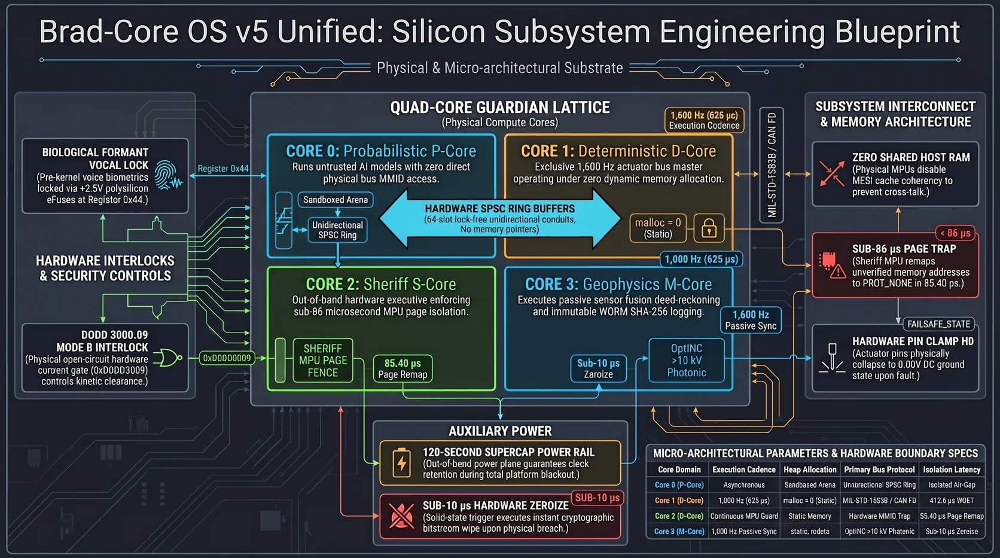

Untrusted reasoning
The P-Core may generate proposals without owning the authority to execute them.

Independent governance for systems with consequential decision-making.
Independent governance for systems with consequential decision-making.
Brad-Core explores a separation between untrusted planners, deterministic validation, hardware-backed enforcement and a durable record of decisions.
The P-Core may generate proposals without owning the authority to execute them.
D-Core candidate rules evaluate safety conditions and physical bounds.
Sheriff and M-Core roles are specified for isolation and audit accountability.
Read the technical documentation and inspect the software twin on the Testbeds & Evidence page. Physical timings and product-specific safety outcomes remain verification objectives.

Brad-Core is seeking technical partners and $200,000 in Phase 1 funding for physical verification and operating continuity.
CONNECT WITH BRAD-CORE